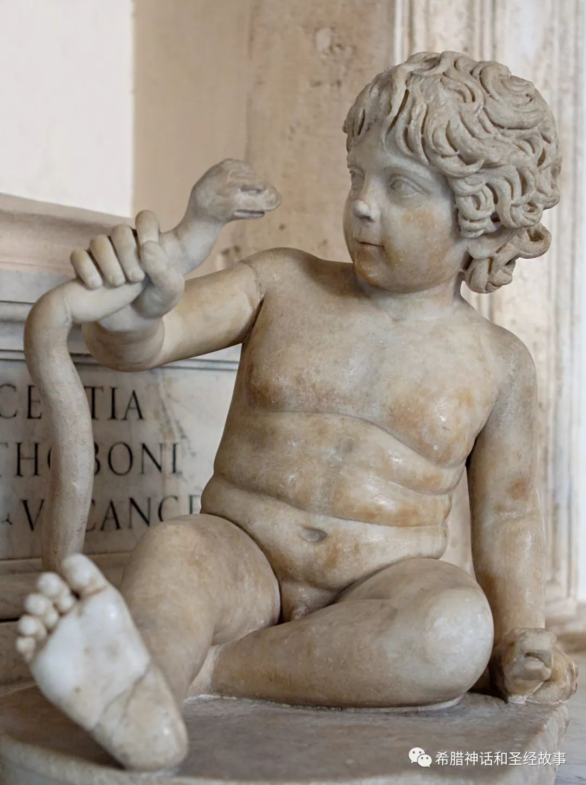

希腊神话中有很多英雄，我们从赫剌克勒斯开始慢慢了解吧！
赫剌克勒斯（Heracles）是宙斯（Zeus）与珀耳修斯（Perseus）的孙女阿尔克墨涅（Alcmene）所生的儿子。他的后父安菲特律翁（Amphitryon）也是珀耳修斯的孙子，是提任斯的国王，但已离开那城，寄居在忒拜。宙斯的妻赫拉（Hera）仇恨她的情敌阿尔克墨涅，并嫉妒她有一个宙斯预言将来有着光荣前途的儿子。所以当阿尔克墨涅生赫剌克勒斯时，她想他在宫中得不到安全，为了恐惧万神之母的嫉恨，她将他放置在田野里，那地方后来人们仍然称为赫剌克勒斯的田野。在这里，假使不是一种神奇的机会使雅典娜（Athena）和赫拉看见他躺在大路上，他真的会不能生存。雅典娜惊奇地看着这个生得美好的孩子，很可怜他，并劝诱她的同伴用她的神圣的乳哺育他。他贪馋地吸食乳汁，不像一般婴儿，咬痛了赫拉，所以她粗暴地将他放回地上。雅典娜将他抱起来，带到附近的城里，作为一个可怜的弃儿，要求王后阿尔克墨涅代为养育。但当他的真正的母亲因为恐惧赫拉而不敢爱他，甚至愿意让他毁灭时，他的满怀敌意的继母却不自觉地救活了她的情敌的儿子。她对他的恩惠还不止此！虽然赫剌克勒斯在她的乳房上仅仅啜吸了片刻，但这女神的几滴乳汁已足使他日后不朽。
阿尔克墨涅一眼就认出了这孩子，所以她欢喜地将他放在摇篮里。但赫拉也觉察到在她胸脯上吃乳的是谁，并觉察到她如何不注意地放过了报复的机会。即刻她命两条可怕的毒蛇爬到阿尔克墨涅的敞开的内室，在熟睡的母亲和她的女仆还没有发觉以前，就爬到摇篮里缠着这孩子的脖子。他被惊醒，尖声哭叫并抬起头来。但这不平常的项链苦恼着他。就在这时他已证明他的超人的力量。他两只手各握着一条蛇的脖子，用力一捏，就把它们捏死。他的乳母这时才看到这蛇，但由于恐怖，不敢前去援救。阿尔克墨涅被他的哭声惊醒。她从床上跳起来，奔向这孩子，并大呼救命。但发现两条毒蛇已经死在孩子的手里。

忒拜的贵族们听到她的叫喊，都拿着武器跑到她的内室。国王安菲特律翁爱护他的义子，并以为这是宙斯给与的一种赠礼，现在也挥舞着雪亮的宝剑跑来。当他听到且看见所发生的事情，他恐怖得发抖，同时也为他的新生幼儿的神异的力量高兴。这件事在他看来好像是一个先兆。所以他召来忒瑞西阿斯，这宙斯赋与预言的能力的人。这预言家对国王和王后和所有在座的人预言这孩子的未来：他将如何地杀戮陆上和海上的许多怪物，他将如何地与巨人斗争并击败他们，并且，在他经历过人间的苦难之后，他将享有神祗们的永生的生命，并与永远年轻的女神赫柏（Hebe）结婚。
未完待续......